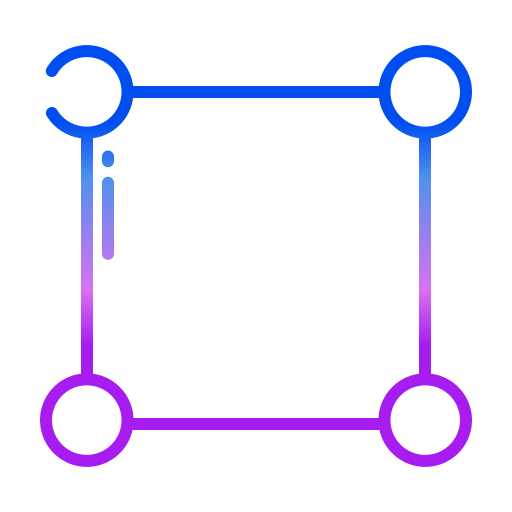

Technical projects across data engineering, APIs, and analytics.
Interactive dashboard visualising country-level economic indicators from the World Bank API.
Near-Earth Objects ranked by proximity, size & velocity.
Real-time orbital path of the International Space Station.
Statistical analysis of Russian personnel and equipment losses. Patterns, trends, and data visualisations across the full conflict dataset.
7+ years across BCG, IBM, Crowley, and Hakkōda — consulting, analytics engineering, and everything in between. I turn messy data into clean pipelines and business questions into dashboards people actually use.
When I'm not building data systems I'm on the mats training Brazilian Jiu-Jitsu, on a trail somewhere, or deep in a sci-fi novel.

Journals, collections, and small apps built for fun.
My personal training log for Brazilian Jiu-Jitsu — raw thoughts, progress, and the grind.
↗Insights and thoughts on data, science, and topics that genuinely interest me.
↗A living catalogue of every book I've finished. Mostly sci-fi. Hopefully some inspiration for you.